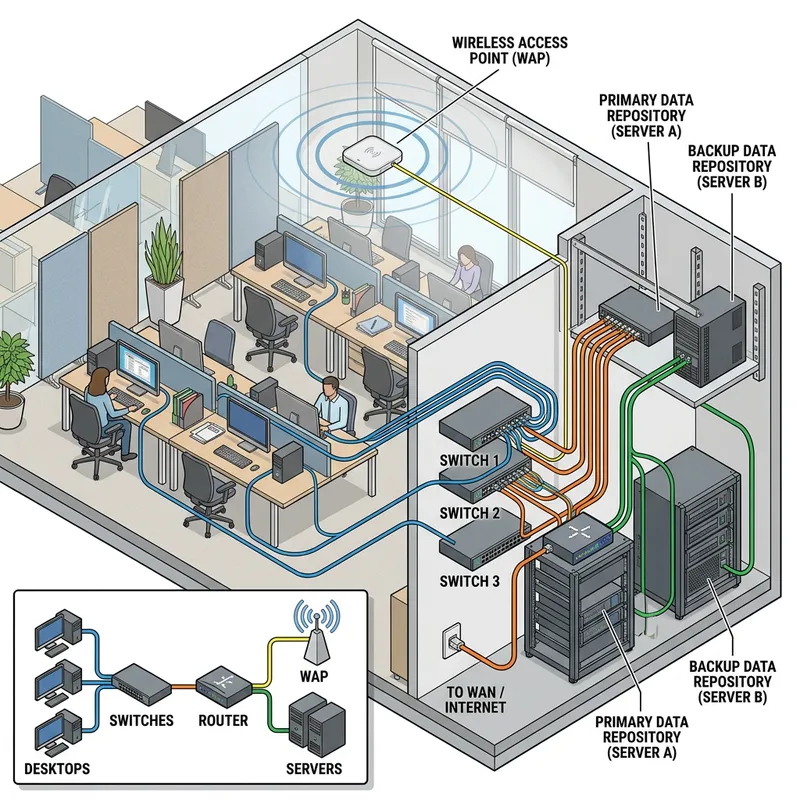

Descubre lo que
conecta una oficina.
Identificación de puestos, rosetas, armario y recorridos de los cables. Observa una red local, reconoce sus componentes y diseña tu propia instalación. Después, investiga cómo son y cuánto cuestan.
Empezar la actividad ↓
01 / Observa las conexionesUna red, cinco miradas.
Selecciona una actividad. Añade etiquetas sobre la imagen y explica tus decisiones.
Pulsa sobre la imagen para colocar una etiqueta.
Guardado local en este navegador.Teclado: enfoca la imagen, mueve el cursor con las flechas y pulsa Intro. En modo cableado, marca el inicio y el final de cada tramo.
¿Cómo es? ¿Cuánto cuesta?
Busca fotografías y productos reales. Anota las fuentes y compara las características y los precios.
Busca una imagen
Relaciona cada símbolo con una fotografía real. Guarda el enlace de la imagen y explica la función.
Consulta un precio
Indica el modelo, las características y el precio.
| Elemento / referencia | Función e imagen | Modelo y características | Precio | Fuente |
|---|
Haz visible tu red.
Entrega las cinco imágenes anotadas, tus explicaciones y la tabla de investigación. Los datos se guardan en este navegador; descarga tu trabajo antes de cambiar de dispositivo.
Antes de entregar
Comprueba el recorrido de una conexión
Ordenador → latiguillo → roseta → cableado fijo → patch panel → latiguillo → switch.